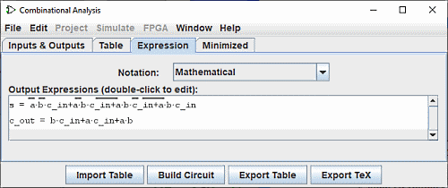
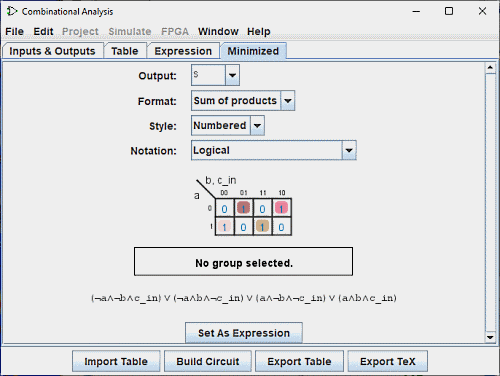

创建表达式
对于每个输出变量，组合分析窗口维护两个结构 - 真值表的相关列和一个布尔表达式 - 指定每个输出与其输入的关系。 您可以编辑真值表或表达式； 另一个将根据需要自动更改以保持一致。
正如我们将在下一页看到的，布尔表达式特别有用，因为组合分析窗口在被告知构建与当前状态相对应的电路时将使用这些表达式。
您可以使用窗口的最后两个选项卡（ 表达式 选项卡和 最小化 选项卡）查看和编辑表达式。
表达式选项卡

表达式 选项卡允许您查看和编辑与每个输出变量关联的当前表达式。 它提供了一个“符号：”选择器和电路数学表达式的列表。
Notation : 选择器：更改输出表达式的表示法模式。 它允许您从五种类型的符号中进行选择：
- 数学 ：
- 上面的条代表否定，Le - AND 函数和 + OR 函数。
- 逻辑 ：
- Ø 表示否定，˄ 表示 AND 函数，˅ 表示 OR 函数。
- 另类逻辑 ：
- ~ 表示否定， ˄ 表示 AND 函数， ˅ 表示 OR 函数。
- 使用布尔值编程 ：
- ! 代表否定，&& AND 函数和|| OR 函数。
- 用位编程 ：
- ~ 代表否定，& 代表 AND 函数，| 代表 AND 函数。 代表OR函数。
在选择器下方，表达式显示在列表中。 您可以通过双击表达式行来编辑文本面板中的表达式。
请注意，如果您编辑表达式，您的真值表将发生不可挽回的更改，反之亦然。
下面的文本窗格以 ASCII 形式显示相同的信息。 这里，NOT 用波形符 ('~') 表示。
您可以在文本窗格中编辑表达式，然后单击 Enter 按钮使其生效； 这样做还将更新真值表以使其对应。 清除 按钮清除文本窗格， 恢复 按钮将窗格更改回代表当前表达式。
请注意，如果编辑真值表，则编辑的表达式将会丢失。
除了代表 AND 和 OR 的乘法和加法之外，您键入的表达式还可以包含任何 C/Java 逻辑运算符以及单词本身。
| 最高优先级 | ~ ! ' | NOT |
|---|---|---|
| (none) & && | AND | |
| ^ | XOR | |
| 最低优先级 | + | || | OR |
以下示例都是同一表达式的有效表示。 您也可以混合使用运算符。
| a' (b + c) |
| !a && (b || c) |
| NOT a AND (b OR c) |
一般来说，AND（或 OR 或 XOR）序列中的括号并不重要。 （特别是，当Logisim创建相应的电路时，它会忽略这样的括号。）
最小化选项卡

最后一个选项卡显示真值表中一列的最小表达式。 该面板上有四个选择器、卡诺表和最小表达式。
使用顶部选择器 输出： ，您可以选择要显示的表格列的最小化输出。
以下选择器 格式:: 允许您指示是否要生成 乘积之和 或 总和 。
选择器 样式： 调整表格边缘上变量的呈现。 可以使用二进制值，也可以使用真实值上的线条。

|
| 编号 |

|
| Lined |
选择器 Notation: 与面板 表达式选择器（见上文） 具有相同的属性
与该变量对应的卡诺图将出现在选择器下方。 您可以单击卡诺图来更改相应的真值表值。 卡诺图还将最小化表达式的当前选定项显示为实心半透明圆角矩形。
下面是最小化的表达式本身，其格式与“表达式”选项卡的显示中相同。 Logisim-evolution 使用 Quine-McCluskey 算法来计算最小化表达式。 这相当于卡诺图，但它适用于任意数量的输入变量。
设置为表达式 按钮允许您选择最小化的表达式作为与变量对应的表达式。 这通常是不必要的，因为对真值表的编辑会导致对更改的列使用最小化表达式； 但如果您通过“表达式”选项卡输入表达式，这可以是切换到相应最小化表达式的便捷方法。
下一步： 生成电路 。